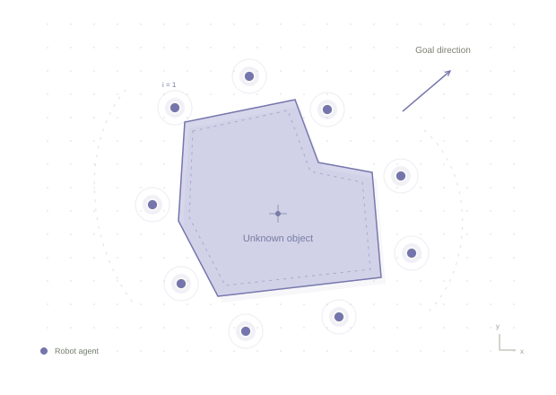
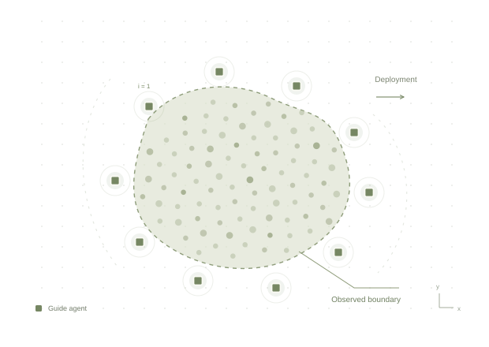

Kaixin WuPh.D. student · Informatics & Data Science
Local perception.Collective action. I study perception and cooperation in multi-agent systems, with a focus on cooperative robotic transport and adaptive guidance for complex crowds.
HIROSHIMA, JAPAN
RESEARCH, ILLUSTRATED FIG. 01

Transport Guidance
◎ Local sensing Exploring collective action through local perception.
Concept illustration · not experimental data or a controller simulation
01 Multi-agent systemsMULTI-AGENT SYSTEMS 02 Robot cooperationROBOT COOPERATION 03 Crowd guidanceCROWD GUIDANCE
01 / CURRENT RESEARCH
What I am working on. DBACT 01 / RESEARCH CONCEPT
Research concept illustration↗
Unknown objects. Coordinated transport. Decentralized Boundary-Aware Cooperative Transport
Exploring how multiple robots can use local sensing and cooperation to transport objects without prior knowledge of their shape.
AGD–UDC 02 / RESEARCH CONCEPT

Research concept illustration↗
Limited resources. Adaptive guidance. Adaptive Guide-Agent Deployment for Unknown Dynamic Crowds
Studying how guide agents can be deployed around crowds, with the longer-term goal of adapting to changing environments.
02 / PUBLICATIONS
Publications ORCID ↗ 2024 Yi Li, Yanfeng Lu, Kaixin Wu, Yuan Fang, Chaodan Zheng, Jiangang Zhang
IEEE Transactions on Applied Superconductivity, 34(8), 1–4
2024 Kaixin Wu
2024 5th International Conference on Computer Vision, Image and Deep Learning (CVIDL), 852–857
2023 Kaixin Wu
Proceedings of ITEI 2022 · EAI, published 2023
03 / ABOUT ME kwPERCEIVE · COOPERATE · EXPLORE
HIROSHIMA, JAPAN
Understanding collectives. I am Kaixin Wu, a Ph.D. student at the Complex Systems Science Laboratory, Hiroshima University, since April 2026, supervised by Prof. Masaki Ogura.
With an MSc in Computer Science and a bachelor’s degree in Software Engineering, my previous work spans large language models and formal verification, computer vision, and AI deployment. I now focus on robotic cooperation and crowd guidance, with an interest in practical applications.
Education Apr 2026 — Present Hiroshima University Ph.D. student · Informatics & Data Science
Aug 2023 — Dec 2025 The University of Manchester MSc in Computer Science
Sep 2019 — Jun 2023 Guangzhou College of South China University of Technology Bachelor’s degree in Software Engineering
Previous research experience May 2025 — Sep 2025 Hiroshima University Special Research Student (visiting)
Complex Systems Science Laboratory.
Sep 2023 — Aug 2024 The University of Manchester Research Assistant
Research on automated code repair using large language models and formal verification.
Apr 2023 — Sep 2023 Chinese Academy of Sciences Research Assistant
Computer vision for UAV-based power infrastructure inspection in complex weather.
Programming & development Python Java Spring Boot Vue.js Research tools Jupyter LaTeX Cursor PyCharm Languages Chinese (native) English Japanese (JLPT N1)